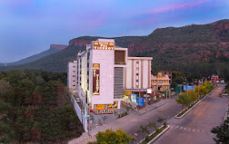
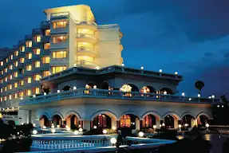

-
Indo Hokke
Discover tranquility near the Rajgir Glass Bridge at Indo Hokke.
Our hotel provides a peaceful retreat amidst the scenic beauty of
Rajgir, offering comfortable accommodations and modern amenities
for a relaxing stay. Explore nearby attractions while experiencing
warm hospitality and picturesque views. Book your stay now and
immerse yourself in the wonders of Rajgir.
 Book Now
Book Now
-
Hotel Mamta International
Located in close proximity to the historic Nalanda University,
Hotel Mamta International offers a serene escape in the heart of
ancient wisdom. Our hotel provides comfortable accommodations and
modern amenities, ensuring a delightful stay for our guests.
Experience tranquility amidst the echoes of history and explore
the rich heritage of Nalanda during your visit.
 Book Now
Book Now
-
Z-Hotel, Puri, Odisha
Discover the coastal charm at Z-Hotel, situated in the heart of
Puri, Odisha. Immerse yourself in the tranquil ambiance and scenic
beauty as you relax in our comfortable accommodations. With modern
amenities and attentive service, we ensure a memorable stay for
guests seeking both relaxation and exploration. Experience the
rich cultural heritage and natural splendor of Puri while
indulging in warm hospitality at Z-Hotel.
 Book Now
Book Now
-
Hotel Pai Viceroy, Tirupathi
Experience luxury and comfort at Hotel Pai Viceroy, conveniently
located in Tirupathi. Nestled amidst the serene surroundings, our
hotel offers a tranquil retreat for travelers. Enjoy modern
amenities, comfortable accommodations, and exceptional hospitality
during your stay. With easy access to nearby attractions,
including the sacred Tirumala Temple, Hotel Pai Viceroy is the
perfect choice for your visit to Tirupathi.

Book Now
-
Hotel City Inn, Varanasi
Discover comfort and convenience at Hotel City Inn, located in the
heart of the city. Our hotel offers a welcoming retreat for
travelers, providing modern amenities and comfortable
accommodations. Whether you're here for business or leisure, Hotel
City Inn ensures a pleasant stay with attentive service and a
convenient location. Experience the warmth of hospitality and
explore the vibrant city surroundings during your visit.
Book Now
-
The Gateway Hotel Beach Road Visakhapatnam
Experience luxury and serenity at The Gateway Hotel Beach Road
Visakhapatnam. Situated along the picturesque Beach Road, our
hotel offers breathtaking views of the Bay of Bengal and provides
a tranquil escape from the bustling city life. Enjoy world-class
amenities, elegant accommodations, and unparalleled hospitality
during your stay. With easy access to the beach and nearby
attractions, The Gateway Hotel is the perfect destination for a
memorable getaway in Visakhapatnam.

Book Now
-
Hotel SRM Grandeurs
Experience elegance and comfort at Hotel SRM Grandeurs. Nestled in
a prime location, our hotel offers a luxurious retreat for
travelers seeking tranquility and convenience. With spacious
accommodations, modern amenities, and impeccable service, we
ensure a memorable stay for our guests. Whether you're here for
business or leisure, Hotel SRM Grandeurs provides a welcoming
ambiance and a memorable experience.
Book Now
-
Nature Nest
Discover tranquility at Nature Nest, nestled amidst the serene
beauty of nature. Our resort offers a peaceful retreat for those
seeking relaxation and rejuvenation. With cozy accommodations,
lush surroundings, and personalized service, we ensure a memorable
stay for our guests. Immerse yourself in the beauty of nature,
indulge in outdoor activities, and experience warm hospitality at
Nature Nest.
Book Now
-
Hotel Paladin Pride
Experience luxury and sophistication at Hotel Paladin Pride.
Situated in a prime location, our hotel offers a majestic retreat
for travelers seeking elegance and comfort. With lavish
accommodations, upscale amenities, and exceptional service, we
ensure a memorable stay for our guests. Whether you're here for
business or leisure, Hotel Paladin Pride provides an unmatched
level of hospitality and a truly unforgettable experience.
Book Now